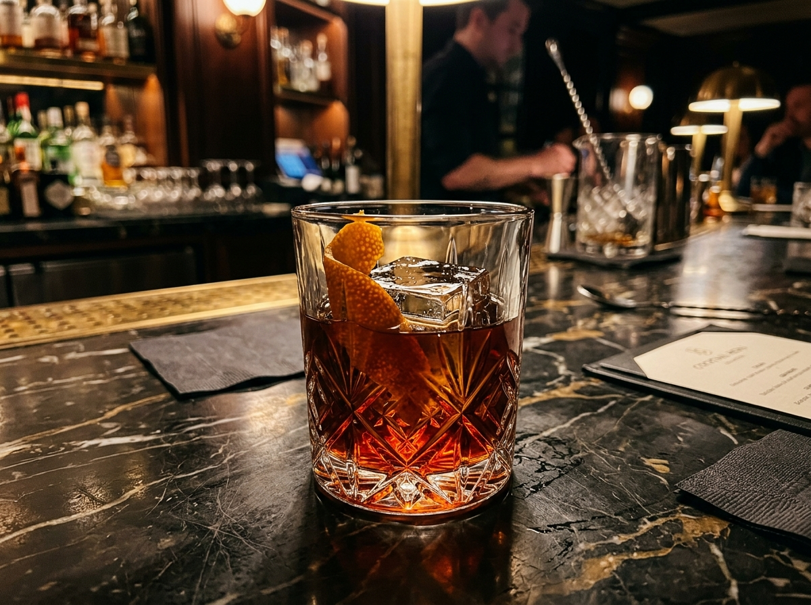

1. Volcanic Stone Molcajete
Carved from natural Mexican volcanic basalt stone, preserving optimal temperature & mineral flavor.
At La Victoria Cocina Mexicana & Bar, guacamole is elevated to an interactive ritual. Ripe Haas avocados are mashed tableside in authentic volcanic stone molcajetes, customized with fresh key lime juice, coarse sea salt, diced jalapeños, & cilantro.

Carved from natural Mexican volcanic basalt stone, preserving optimal temperature & mineral flavor.
Tailored precisely to guest preference—from mild avocado creaminess to fiery habanero & extra lime.
White corn masa hand-pressed & grilled to order alongside warm, house-fried tortilla chips.